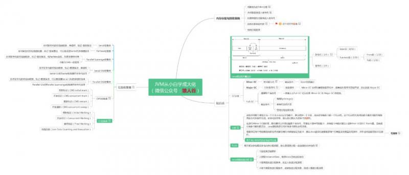

周末有小伙伴留言说上周面试时被问到内存分配策略的问题，但回答的不够理想，小伙伴说之前公号里看过这一块的文章的，当时看时很清楚，也知道各个策略是干嘛的，但面试时脑子里清楚，心里很明白，但嘴里就是说不清楚，说出来的就是像云像雾又像风，最后面试官说他应该是不清楚这一块的内容
这里给小伙伴要再次说明下，任何知识点，先抓主干，再摸细节。对于面试来说，能把各个主干捋清楚，只要面试官要求不是太高，都是能过关的。毕竟jvm参数那么多，难不成面试官揪着各个参数的作用不放？如果真遇到这种太过揪细节的，只能说江湖路远，有缘再见！
对象的内存分配，往大方向上讲，就是在堆上分配（但也可能经过JIT编译后被拆散为标量类型并间接地栈上分配），对象主要分配在新生代的Eden区上，如果启动了本地线程分配缓冲，将按线程优先在TLAB上分配。少数情况下可能会直接分配在老年代中。
大多数情况下，对象在新生代Eden区中分配。当Eden区没有足够空间进行分配时，虚拟机将发起一次Minor GC（前面篇章中有介绍过Minor GC）。但也有一种情况，在内存担保机制下，无法安置的对象会直接进到老年代。
大对象时指需要大量连续内存空间的Java对象，最典型的大对象就是那种很长的字符串以及数组。
虚拟机提供了一个-XX：PretenureSizeThreshold参数，令大于这个设置值的对象直接在老年代分配。目的就是避免在Eden区及两个Survivor区之间发生大量的内存复制。
虚拟机给每个对象定义了一个对象年龄（Age）计数器。如果对象在Eden出生并经过第一次Minor GC后仍然存活，并且能被Survivor容纳的话，将被移动到Survivor空间中，并且对象年龄设为1 。对象在Survivor区中没经过一次Minor GC，年龄就加1岁，当年龄达到15岁（默认值），就会被晋升到老年代中。
对象晋升老年代的年龄阈值，可以通过参数-XX：MaxTenuringThreshold设置。
真的不是为什么不能是其它数（除了15），着实是臣妾做不到啊！
事情是这样的，HotSpot虚拟机的对象头其中一部分用于存储对象自身的运行时数据，如哈希码（HashCode）、GC分代年龄、锁状态标志、线程持有的锁、偏向线程ID、偏向时间戳等，这部分数据的长度在32位和64位的虚拟机（未开启压缩指针）中分别为32bit和64bit，官方称它为“Mark word”。
例如，在32位的HotSpot虚拟机中，如果对象处于未被锁定的状态下，那么Mark Word的32bit空间中25bit用于存储对象哈希码，4bit用于存储对象分代年龄，2bit用于存储锁标志位，1bit固定为0 。
明白是什么原因了吗？对象的分代年龄占4位，也就是0000，最大值为1111也就是最大为15，而不可能为16，20之类的了。
为了能更好的适应不同程序的内存状况，虚拟机并不是永远地要求兑现过的年龄必须达到了MaxTenuringThreshold才能晋升老年代。
很多文章都只是注意到了上面描述的情况（包括阿里中间件公众号发的一篇文章里也只是这么简单的介绍），但如果只是这么认识的话，会发现在实际的内存回收中有悖于此条规定。
举个小栗子，如对象年龄5的占34%，年龄6的占36%，年龄7的占30%，按那两个标准，对象是不能进入老年代的，但Survivor都已经100%了啊？
大家可以关注这个参数TargetSurvivorRatio，目标存活率，默认为50%。大致意思就是说年龄从小到大累加，如加入某个年龄段（如栗子中的年龄6）后，总占用超过Survivor空间TargetSurvivorRatio的时候，从该年龄段开始及大于的年龄对象就要进入老年代（即栗子中的年龄6,7对象）。动态对象年龄判断，主要是被TargetSurvivorRatio这个参数来控制。而且算的是年龄从小到大的累加和，而不是某个年龄段对象的大小。
在发生Minor GC之前，虚拟机会先检查老年代最大可用的连续空间是否大于新生代所有对象总空间，如果这个条件成立，那么Minor GC可以确保是安全的。如果不成立，则虚拟机会查看HandlePromotionFailure设置值是否允许担保失败。如果允许，那么会继续检查老年代最大可用的连续空间是否大于历次晋升到老年代对象的平均大小，如果大于，将尝试着进行一次Minor GC，尽管这次Minor GC是有风险的；如果小于，或者HandlePromotionFailure设置不允许冒险，那这时也要改为进行一次Full GC 。
上面说的风险是什么呢？我们知道，新生代使用复制收集算法，但为了内存利用率，只使用其中一个Survivor空间来作为轮换备份，因此当出现大量对象在Minor GC后仍然存活的情况（最极端的情况就是内存回收后新生代中所有对象都存活），就需要老年代进行分配担保，把Survivor无法容纳的对象直接进入老年代。
总结脑图

备注： 脑图太大，如需高清完整大图，可在“猿人谷”公众号后台输入：jvm